输出手法 DPS 排行
本排行为 TheAegisRelic 实测的 107 组全职业输出手法 按照「核心 DPS」排列
测试前提及术语说明：
所有数据均预设享受天空祝福（1.35倍武器伤害增益）及牵引器火炮（1.3倍虚弱减益）加成。
使用神圣裁决（神性）的输出手法亦预设享受的是牵引器火炮的1.3倍虚弱减益，而非神圣裁决本身的1.15倍减益。
所有输出手法均已排除牵引器火炮及神圣裁决本身的伤害，对伤害的影响误差值在1%以内。
配装：绝大部分测试均只使用两套配装。一套脱手超能配装（200超能）以及一套DPS配装（200武器）
许多猎人的输出手法均容许猎人在输出期间回转出第二个超能。但由于测试工具会在开物品栏时出错，所以除了第73名（千语+松身裤）这种特化超能回转的手法外，其余能回转出第二个超能的手法均不会切配装（例如：加拉诺碎片）而是直接使用超能
核心DPS：输出手法进入稳定输出部分的DPS，以最小化强力脱手超能对输出手法实际DPS产生的偏差。
分段 DPS（10s–60s）与「可续」：10s 至 60s 对应输出手法到达对应时间节点时的平均DPS（如 20s 即前 20 秒总伤害除以 20）。提前打空弹药或结束的循环在该节点后留空。
「可续」列如果为 ● 则表示停表后仍可继续维持输出手法循环，○ 表示弹药或其他资源耗尽。
类别及测试用：
「通用」为三职业均可使用的手法
「专精」为某一职业专属的手法
「辅助」专为使用牵引器火炮、神圣裁决、加拉尔号角或法夫纳的辅助玩家补充伤害而设
测试用一般为靶场木桩「卡尔」
如果卡尔因受击抖动而导致测试困难的话则转为使用「科雷戈斯」
需要小怪用以近战叠层的环境使用「拉席尔」
最后，以上只是对各个术语的简单解释，如欲详细了解实际计算方法，请观看Aegis的原视频以及表格拉表。
| 名称 | 排行 | 类别 | 职业 | 核心 DPS | 区间 | 10s | 20s | 30s | 40s | 50s | 60s | 结束时间 | 结束 DPS | 结束总伤 | 可续 | 超能 | 护甲 1 | 护甲 2 | 套装 | 动能 | 能量 | 威能 | 其他 | 神器模组 | 其他因素 | 首领 | 配装 | 注解 |
|---|---|---|---|---|---|---|---|---|---|---|---|---|---|---|---|---|---|---|---|---|---|---|---|---|---|---|---|---|
| 传家宝 好建议（指引光环） | 1 | 专精 | 猎人 | 21141 | 0.9–11.8 | 20545 | 16518 | 28.3 | 15289 | 431909 | ○ | 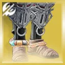 | 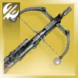 | 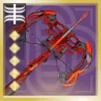 | 狙击手冥想 | 需求层级 | 科雷戈斯 | 配装 | 无虚弱故未带扩展深渊，本可改带 1 烈日 2 虚空激涌，受备弹限制共射出 20 发 | |||||||||
| 烈焰之歌 狡诈严冬 | 2 | 专精 | 术士 | 18852 | 1.5–7.9 | 17308 | 12.8 | 14299 | 182308 | ○ | 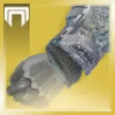 | 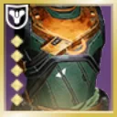 | 护盾粉碎、烈日爆发 | 卡尔 | 配装 | 依靠威胁探测与护甲模组拉满霰弹枪最高射速 | ||||||||||||
| 枯萎囤积 好建议（指引光环） | 3 | 专精 | 猎人 | 18342 | 0.6–9.6 | 18094 | 14592 | 12529 | 11440 | 10903 | 10642 | 75.9 | 10216 | 775104 | ● | 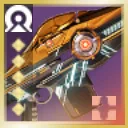 | 需求层级 | 科雷戈斯 | 配装 | 无虚弱故未带扩展深渊 | ||||||||
| 叛贼 轰鸣巨人 | 4 | 专精 | 猎人 | 15630 | 6.9–14.8 | 8769 | 19.0 | 10445 | 198462 | ○ | 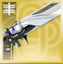 | 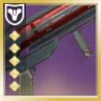 | 极限突破、银白重炮 | 哨兵圣盾、集群猎人 | 卡尔 | 配装 | 预先叠满煅炉眷属 x3，哨兵圣盾填装，持久印象 + 收割者贡品 x4，除最后一发外全部吃到叛贼加成 | |||||||||||
| 叛贼 异教徒 | 5 | 专精 | 猎人 | 15066 | 1.4–16.0 | 14047 | 16.3 | 13707 | 222742 | ○ | 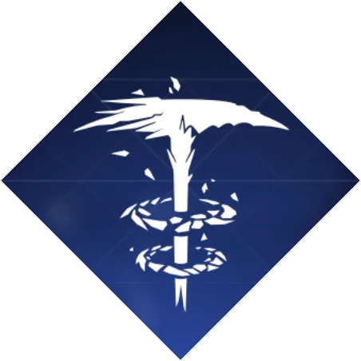 | 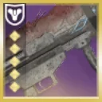 | 银白重炮 | 神圣裁决、集群猎人 | 卡尔 | 配装 | 预先叠好凌光偏转 + 超充弹匣 + 换挡 x5，理论上也可改用集束炸弹异教徒配哨兵圣盾但操作繁琐，最后一发火箭略乱且未吃到叛贼 | |||||||||||
| 传家宝 好建议 | 6 | 专精 | 猎人 | 13969 | 1.0–12.6 | 13774 | 11323 | 28.6 | 10480 | 300002 | ○ | 狙击手冥想 | 科雷戈斯 | 配装 | 无虚弱故未带扩展深渊，本可改带 1 烈日 2 虚空激涌，受备弹限制共射出 20 发 | |||||||||||||
| 枯萎囤积 好建议 | 7 | 专精 | 猎人 | 13542 | 0.5–9.5 | 12841 | 11090 | 9339 | 8317 | 7798 | 7218 | 79.5 | 7180 | 570822 | ● | 科雷戈斯 | 配装 | 无虚弱故未带扩展深渊 | ||||||||||
| 需求层级（指引光环） | 8 | 通用 | 猎人 | 12294 | 2.5–13.8 | 11440 | 10156 | 8249 | 7354 | 6864 | 6479 | 78.3 | 6027 | 471600 | ● | 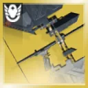 | 银白箭袋、半自动强袭 | 需求层级 | 科雷戈斯 | 配装 | 全程满蓄力穿过指引光环连射 | |||||||
| 利维坦之息 | 9 | 专精 | 猎人 | 12293 | 1.6–15.3 | 13846 | 18.3 | 11875 | 216722 | ○ | 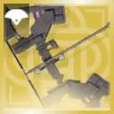 | 银白箭袋 | 神圣裁决 | 卡尔 | 配装 | 略微优于奥菲斯钻机 | ||||||||||||
| 组合打击 抓钩 | 10 | 专精 | 猎人 | 10397 | 1.9–14.9 | 8429 | 15.3 | 9422 | 143684 | ● | 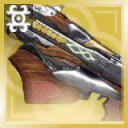 | 传导宇宙水晶、电弧复合、视网膜灼烧 | 拉席尔 | 配装 | 组合打击 x3 + 生物强化，测试提前截断并外推，已修正人为失误 | |||||||||||||
| 叛贼 光芒复仇 | 11 | 通用 | 猎人 | 10325 | 3.6–15.0 | 12781 | 15.5 | 11796 | 182840 | ○ | 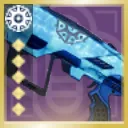 | 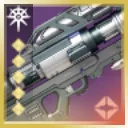 | 极限突破、银白重炮 | 集群猎人、瓦解 | 卡尔 | 配装 | 超能前先打一发火箭以对齐偶数百弹匣（4x2），最后一发几乎没吃到叛贼，期间可能短暂掉过一点命运眷顾 | |||||||||||
| 叛贼 光芒复仇 | 12 | 通用 | 术士 | 10158 | 4.9–15.2 | 9586 | 15.3 | 9778 | 149112 | ○ | 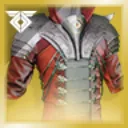 | 集群战术、银白重炮 | 瓦解、牵引器火炮、集群猎人 | 卡尔 | 配装 | 超能前先打一发火箭使后续弹匣凑整（4x2），两次上升丝线填装打满 8 发叛贼火箭 | ||||||||||||
| 寄生虫 双精确重击霰弹枪 | 13 | 通用 | 猎人 | 10108 | 7.3–18.4 | 12441 | 10635 | 9365 | 34.1 | 9115 | 311037 | ○ | 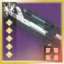 | 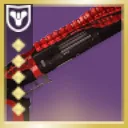 | 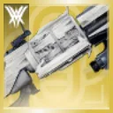 | 极限突破、动能合成 | 卡尔 | 配装 | 预先叠满转向与增伤 Perk，123 切枪循环，无第二次超能 | |||||||||
| 悦耳之声 光芒复仇 | 14 | 专精 | 术士 | 9937 | 6.4–14.4 | 5819 | 6823 | 6087 | 6020 | 5860 | 5585 | 64.6 | 5620 | 363210 | ○ | 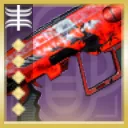 | 集群战术 | 神圣裁决、瓦解 | 卡尔 | 配装 | 可带银白重炮追求更高爆发，穿插线虫手雷与错开射击的火箭以维持平滑持续循环 | |||||||
| 真相 | 15 | 通用 | 术士 | 9737 | 4.0–13.1 | 9923 | 16.0 | 9231 | 147692 | ○ | 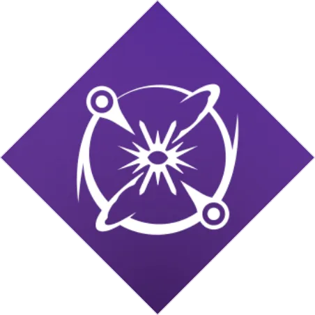 | 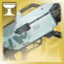 | 极限突破、银白重炮 | 瓦解 | 卡尔 | 配装 | 指挥琢面打出了约 5 发火箭倾泻，其余为常规倾泻，冲刺取消填装不够理想；另测过织针风暴但结果相近 | |||||||||||
| 第四骑士 VS 寒冷抑制 | 16 | 专精 | 猎人 | 9660 | 14.5–24.0 | 8428 | 8930 | 8963 | 35.1 | 8398 | 294982 | ○ | 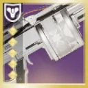 | 元素超驰、醒神丝线 | 神圣裁决 | 卡尔 | 配装 | 预先触发凌光偏转，配合烈焰之歌与刺激的低语自动填装 | ||||||||||
| 真相 | 17 | 通用 | 猎人 | 9490 | 3.1–17.5 | 9923 | 17.5 | 10022 | 175384 | ○ | 极限突破、银白重炮 | 瓦解 | 卡尔 | 配装 | 前 3 发火箭未吃命运眷顾，冲刺取消加快开镜，预先备好收割者贡品 x4 与原型真理探索者 | |||||||||||||
| 叛贼 光芒复仇 | 18 | 通用 | 泰坦 | 9220 | 6.6–18.5 | 10118 | 18.8 | 9373 | 175740 | ○ | 雷霆反击、传导宇宙织针、银白重炮 | 瓦解、牵引器火炮、集群猎人 | 卡尔 | 配装 | 超能前先打一发火箭使后续弹匣凑整（4x2），依靠医疗设备 + 电击陷阱填装，基本维持 3 层传导宇宙织针 | |||||||||||||
| 真相 | 19 | 通用 | 泰坦 | 9100 | 3.6–17.4 | 9462 | 17.4 | 9563 | 166154 | ○ | 雷霆反击、传导宇宙织针、银白重炮 | 卡尔 | 配装 | 未测试圣人 14 号的头盔（收益不大），仅叠了约 1 层传导宇宙织针 | ||||||||||||||
| 隐秘追猎 光芒复仇 | 20 | 专精 | 猎人 | 8419 | 3.3–16.8 | 13244 | 9431 | 26.0 | 9030 | 234782 | ○ | 烈焰之心、银白重炮 | 神圣裁决、瓦解 | 卡尔 | 配装 | 烈焰之心未叠满，标准「火箭 → 超能 → 双火箭」起手 | ||||||||||||
| 叛贼 边缘交通 | 21 | 专精 | 猎人 | 7583 | 4.0–8.0 | 8.3 | 13986 | 115384 | ○ | 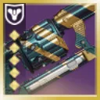 | 极限突破 | 卡尔 | 配装 | 未计入超能前首次级联点触发，仅打 2 个榴弹弹匣，无预先粘附手雷 | ||||||||||||||
| 集体爆破 光芒复仇 | 22 | 专精 | 泰坦 | 7315 | 17.8–27.8 | 6746 | 6923 | 7101 | 35.0 | 6543 | 228994 | ○ | 雷霆反击、传导宇宙织针、银白重炮 | 瓦解、集群猎人、牵引器火炮、风暴要塞 | 卡尔 | 配装 | 暴雷之触脉冲手雷连发配合集束炸弹 + 集体爆破光芒复仇，穿插少量枯萎囤积与铭纹-41，超能伤害偏低（不确定增幅是否被遮挡视线） | |||||||||||
| 混乱无序 双后膛榴弹 | 23 | 专精 | 泰坦 | 7238 | 27.0–33.6 | 8698 | 6834 | 6568 | 34.5 | 6638 | 228994 | ○ | 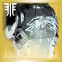 | 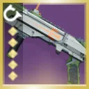 | 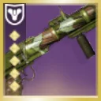 | 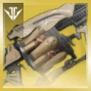 | 雷霆反击、传导宇宙织针、元素超驰 | 瓦解、风暴要塞 | 卡尔 | 配装 | 1212 切枪循环，拯救者的喝彩预先叠好换挡，机巧纬线触发诱导推销，靠暴雷之触脉冲手雷维持元素超驰 | |||||||
| 史赛克的老练 | 24 | 专精 | 猎人 | 7191 | 1.6–16.9 | 8191 | 7096 | 22.4 | 8818 | 197295 | ○ | 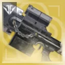 | 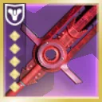 | 银白利刃、极限突破 | 卡尔 | 配装 | 预先叠满狂暴 x3 与转向，1 重 1 轻连段接超能再打预压砥砺刀锋的伊邪那岐的重担；另试过利刃专注 1 重 2 轻，可提一下失重引力子刀剑玩法 | |||||||||||
| 隐秘追猎 | 25 | 专精 | 猎人 | 7190 | 2.0–20.6 | 9632 | 8127 | 27.1 | 8360 | 226756 | ○ | 狙击手冥想、燃烧步枪弹药、烈日爆发 | 神圣裁决 | 卡尔 | 配装 | 场边生成能量球模拟满编埃希恩记忆套装队友，免去手动填装 | ||||||||||||
| 需求层级 | 26 | 通用 | 猎人 | 7173 | 1.4–13.5 | 7121 | 6187 | 5175 | 4553 | 4249 | 3969 | 78.8 | 3706 | 291832 | ● | 银白箭袋、半自动强袭 | 需求层级 | 科雷戈斯 | 配装 | 全程满蓄力穿过指引光环连射 | ||||||||
| 伊邪那岐的重担 翻新 A499 | 27 | 通用 | 术士 | 7154 | 12.4–31.4 | 7625 | 6923 | 6957 | 6572 | 6341 | 6221 | 77.8 | 5988 | 465551 | ● | 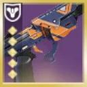 | 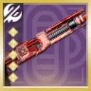 | 狙击手冥想、动能合成、远距填装 | 神圣裁决、瓦解 | 卡尔 | 配装 | 通常 2 发翻新 A499 接 1 发砥砺刀锋，偶有 3 发，弹药砖拾取整体顺利 | ||||||
| 故我在 | 28 | 专精 | 术士 | 7147 | 7.0–20.9 | 3923 | 5538 | 5231 | 5192 | 47.8 | 5268 | 251538 | ● | 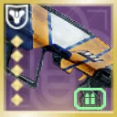 | 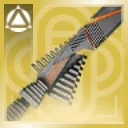 | 极限突破、银白利刃、烈日爆发 | 瓦解 | 卡尔 | 配装 | 纯五度铸造者框架，1 重 2 轻连段，用暗影武器攒回超凡，循环偏向爆发而非回弹药，新星炸弹伤害偏低，未带地狱火 | ||||||||
| 千语 | 29 | 通用 | 术士 | 7060 | 3.0–16.4 | 7777 | 18.9 | 7282 | 137449 | ○ | 粒子重建、极限突破 | 粒子重建 | 卡尔 | 配装 | 按住左键连射，配合骨灰余烬与粒子重建回弹 | |||||||||||||
| 遗赠 | 30 | 通用 | 术士 | 6970 | 9.9–19.1 | 4846 | 5654 | 5538 | 5192 | 43.8 | 5380 | 235385 | ○ | 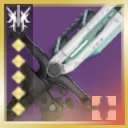 | 极限突破、银白利刃、烈日爆发 | 瓦解、集群猎人 | 卡尔 | 配装 | 主要靠技能维持元素磨砺 x5，其余中规中矩 | |||||||||
| 寄生虫 威胁等级 | 31 | 通用 | 术士 | 6937 | 42.6–58.3 | 6622 | 7023 | 6689 | 7124 | 6622 | 6789 | 79.8 | 6718 | 535787 | ● | 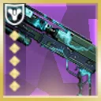 | 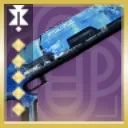 | 动能合成 | 神圣裁决、瓦解 | 卡尔 | 配装 | 利用煅炉眷属 x3 切枪 Bug（实测约 15% 增伤，但与常规结果差距不大），循环手法与猎人相同 | ||||||
| 叛贼 光芒复仇（双脚架） | 32 | 专精 | 猎人 | 6867 | 3.5–9.6 | 10154 | 17.5 | 8176 | 143077 | ○ | 烈焰之心、银白重炮 | 集群猎人 | 卡尔 | 配装 | 有 3–4 发火箭未吃到叛贼加成，其余直接倾泻，未使用命运眷顾 | |||||||||||||
| 冷酷无情 | 33 | 通用 | 猎人 | 6717 | 7.0–19.3 | 7585 | 6908 | 20.1 | 6980 | 140469 | ○ | 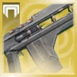 | 极限突破 | 卡尔 | 配装 | 预先双杀触发加成，配合刺激的低语填装 | ||||||||||||
| 三色矛头蝮-4bl | 34 | 通用 | 术士 | 6665 | 5.0–18.3 | 5503 | 5503 | 5385 | 5325 | 46.6 | 5444 | 253846 | ○ | 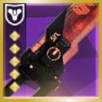 | 极限突破、银白利刃、烈日爆发 | 瓦解、集群猎人 | 卡尔 | 配装 | 1 重 2 轻连段，燃烧野心 + 聚合充能，未带地狱火 | |||||||||
| 伊邪那岐的重担 翻新 A499 | 35 | 通用 | 泰坦 | 6606 | 22.5–37.9 | 9632 | 7625 | 7023 | 6823 | 6341 | 6087 | 79.3 | 5723 | 453512 | ● | 雷霆反击、传导宇宙织针、狙击手冥想、动能合成 | 神圣裁决、瓦解 | 卡尔 | 配装 | 通常 1 发砥砺刀锋接 2 发翻新 A499，再用边打边劫食莲者拾取动能合成弹药砖，末段微调以维持平衡 | ||||||||
| 狼毒 | 36 | 通用 | 术士 | 6602 | 6.5–17.8 | 6000 | 5885 | 5615 | 5942 | 5262 | 5346 | 67.0 | 5442 | 364615 | ○ | 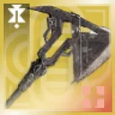 | 极限突破、银白利刃、烈日爆发 | 瓦解 | 卡尔 | 配装 | 血红炼金术表现相近但略逊一筹，约 10–12 次轻击回能，激活切枪间隙穿插区域拒止榴弹，未带地狱火 | |||||||
| 寄生虫 双攻击型框架霰弹枪 | 37 | 专精 | 猎人 | 6596 | 6.4–38.0 | 9923 | 8423 | 7692 | 7442 | 42.9 | 7535 | 323077 | ○ | 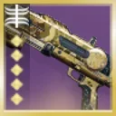 | 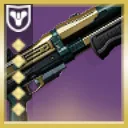 | 极限突破、动能合成 | 卡尔 | 配装 | 123 切枪打身体，靠两段飞刀充能与手雷触发仁慈余烬，赶在霰弹枪轮次前转好闪身 | |||||||||
| 寄生虫 威胁等级 | 38 | 通用 | 猎人 | 6280 | 19.4–39.6 | 10635 | 8227 | 7625 | 7324 | 6943 | 6656 | 80.0 | 6647 | 531773 | ● | 极限突破、动能合成 | 神圣裁决、瓦解 | 卡尔 | 配装 | 本可用命运眷顾，每次激活级联点打约 11 发威胁等级，每约 2 次激活补一发寄生虫 | ||||||||
| 遗赠 | 39 | 通用 | 猎人 | 6264 | 40.6–49.4 | 7385 | 8192 | 7692 | 7442 | 7062 | 51.6 | 7063 | 364615 | ○ | 极限突破、银白利刃 | 集群猎人、瓦解 | 卡尔 | 配装 | 靠其他武器与瓦解维持元素磨砺 x5，1 重 1 轻连段，为攒出第二次超能频繁闪身导致核心 DPS 偏低 | |||||||||
| 回旋漩涡 | 40 | 专精 | 猎人 | 1809 | 0.0–80.0 | 2077 | 1615 | 1692 | 1673 | 1708 | 1731 | 80.0 | 6221 | 497641 | ● | 线织爆破、集群战术、醒神丝线 | 卡尔 | 配装 | 依靠插旗术士切装留下的心纺祷告切线手雷实现旋涡连发 | |||||||||
| 狼毒 | 41 | 通用 | 猎人 | 6194 | 25.9–41.6 | 7615 | 6577 | 6000 | 6173 | 6138 | 5885 | 67.4 | 5823 | 392308 | ○ | 极限突破、银白利刃、烈日爆发 | 瓦解 | 卡尔 | 配装 | 10 次轻击充能接切枪取消连段，有时多挥几刀以加快攒满能量槽 | ||||||||
| 挽歌 | 42 | 通用 | 术士 | 6174 | 5.1–15.8 | 5077 | 4731 | 5077 | 4788 | 4615 | 58.4 | 4862 | 283846 | ○ | 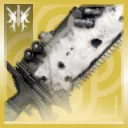 | 极限突破、银白利刃、烈日爆发 | 瓦解 | 卡尔 | 配装 | 燃烧野心催化，2 轻 1 重连段，微顿以防卡成 1 轻 1 重，每约 4 轮连段补一发区域拒止榴弹，黎明副歌略逊一筹 | ||||||||
| 混乱无序 裁决定论 | 43 | 通用 | 猎人 | 6150 | 23.1–37.0 | 8343 | 7456 | 6686 | 6790 | 40.3 | 6792 | 273373 | ○ | 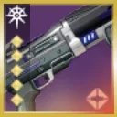 | 极限突破、电弧复合、视网膜灼烧、动能冲击 | 瓦解、牵引器火炮 | 卡尔 | 配装 | 聚合充能 + 战嚎炮管，若换用特技闪身可提高仁慈余烬覆盖率以攒出第二次超能 | |||||||||
| 虫神爱抚 投掷飞锤 | 44 | 专精 | 泰坦 | 6149 | 12.4–43.0 | 6692 | 6231 | 6154 | 6115 | 6046 | 5962 | 78.6 | 5665 | 445385 | ● | 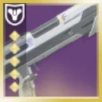 | 护盾粉碎 | 卡尔 | 配装 | 无限刷新勇士叠层，全程基本维持 3–5 层燃烧之拳，护盾粉碎大部分时间未生效 | ||||||||
| 伊邪那岐的重担 翻新 A499 | 45 | 通用 | 猎人 | 6106 | 6.1–72.3 | 8428 | 6522 | 6890 | 6321 | 6502 | 6254 | 78.6 | 6253 | 491640 | ● | 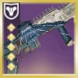 | 极限突破、狙击手冥想、动能合成 | 神圣裁决、瓦解 | 卡尔 | 配装 | 未用命运眷顾，但快速装弹松身裤自动拾取弹药砖极其稳定，动能裂口极不稳定 | |||||||
| 阿克瑞斯传说 | 46 | 通用 | 猎人 | 6028 | 6.4–23.4 | 7615 | 6577 | 6154 | 34.8 | 5910 | 205384 | ○ | 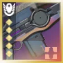 | 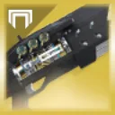 | 极限突破、电弧复合、视网膜灼烧 | 卡尔 | 配装 | 仅叠 2 层聚合充能，用追踪步枪触发视网膜灼烧 | ||||||||||
| 沉没 | 47 | 专精 | 猎人 | 6025 | 11.1–28.8 | 6823 | 6522 | 6221 | 5970 | 5739 | 5585 | 79.3 | 5647 | 447492 | ● | 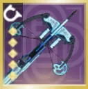 | 银白箭袋、元素超驰、半自动强袭 | 神圣裁决 | 卡尔 | 配装 | 靠区域拒止榴弹 + 狼王刷快速装弹松身裤闪身，每轮闪身双箭齐发，用碎裂手雷造冰影碎片触发元素超驰 | |||||||
| 破冰者 光芒复仇 | 48 | 通用 | 猎人 | 6000 | 6.4–21.5 | 9632 | 7625 | 27.3 | 8100 | 220735 | ○ | 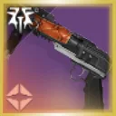 | 极限突破、银白重炮、烈焰之心 | 神圣裁决、加拉尔号角、瓦解 | 卡尔 | 配装 | 123 切枪循环，每 2 发火箭闪身一次 | |||||||||||
| 千语 | 49 | 通用 | 猎人 | 5956 | 5.0–23.8 | 7633 | 6834 | 5444 | 30.9 | 5347 | 165089 | ○ | 极限突破、粒子重建 | 瓦解、牵引器火炮 | 卡尔 | 配装 | 带骨灰余烬实现每发必点燃，无需冲刺取消 | |||||||||||
| 混乱无序 裁决定论 | 50 | 通用 | 泰坦 | 5886 | 8.3–35.9 | 8876 | 7101 | 6509 | 6701 | 42.5 | 6683 | 284024 | ○ | 雷霆反击、传导宇宙织针、元素超驰 | 瓦解、风暴要塞、牵引器火炮 | 卡尔 | 配装 | 靠暴雷之触脉冲手雷触发元素超驰，常规输出，偶用雷霆一击触发战嚎炮管 | ||||||||||
| 故我在 | 51 | 通用 | 猎人 | 5817 | 32.5–39.5 | 5769 | 5077 | 4385 | 4788 | 4569 | 4231 | 78.8 | 4132 | 325385 | ● | 极限突破、银白利刃、护盾粉碎 | 集群猎人 | 卡尔 | 配装 | 意外缓刑涡流框架，1 重 2 轻连段，结束后用暗影武器攒回超凡 | ||||||||
| 混乱无序 裁决定论 | 52 | 通用 | 术士 | 5816 | 17.6–39.5 | 3373 | 4793 | 5266 | 5459 | 5361 | 53.9 | 5206 | 280473 | ○ | 极限突破、电弧复合、视网膜灼烧、动能冲击 | 瓦解、牵引器火炮 | 卡尔 | 配装 | 常规循环，混乱无序为手动填装（未卡指挥琢面自动填装时机） | |||||||||
| 遗赠 | 53 | 通用 | 泰坦 | 5657 | 33.5–43.1 | 6462 | 6115 | 5846 | 5481 | 45.4 | 5594 | 253846 | ○ | 雷霆反击、传导宇宙织针、元素超驰 | 瓦解、集群猎人、风暴要塞 | 卡尔 | 配装 | 大部分时间维持元素磨砺 x5，末段因缺烈日伤害掉至 x4，靠暴雷之触脉冲手雷触发元素超驰，标准 1 重 1 轻连段 | ||||||||||
| 千语 | 54 | 通用 | 泰坦 | 5544 | 5.9–24.9 | 7101 | 6479 | 5325 | 30.4 | 5318 | 161538 | ○ | 雷霆反击、传导宇宙织针、粒子重建 | 瓦解、牵引器火炮 | 卡尔 | 配装 | 末段需少量冲刺取消，另测过燃烧舞步之道，整体仍是陨星胸甲更优 | |||||||||||
| 混乱无序 快速增长 | 55 | 通用 | 猎人 | 5470 | 31.8–40.4 | 8629 | 6221 | 5753 | 5569 | 45.6 | 5762 | 262876 | ○ | 极限突破、电弧复合、视网膜灼烧、动能冲击 | 神圣裁决、瓦解 | 卡尔 | 配装 | 每隔一次事不过四触发手动填装一回 | ||||||||||
| 三色矛头蝮-4bl | 56 | 通用 | 猎人 | 5460 | 15.8–28.1 | 7633 | 6923 | 6509 | 6346 | 46.0 | 6252 | 287574 | ○ | 极限突破、银白利刃、烈日爆发 | 牵引器火炮、瓦解 | 卡尔 | 配装 | 燃烧野心 + 聚合充能，全程 1 重 2 轻连发 | ||||||||||
| 挽歌 | 57 | 通用 | 猎人 | 5373 | 14.1–38.9 | 8077 | 6692 | 6154 | 5942 | 5908 | 53.5 | 5953 | 318461 | ○ | 极限突破、银白利刃、烈日爆发 | 瓦解 | 卡尔 | 配装 | 重复 2 轻 1 重连段，略微放慢节奏避免第 4 轮连段能量不足 | |||||||||
| 混乱无序 无礼言论 | 58 | 专精 | 猎人 | 5327 | 4.5–28.6 | 10836 | 7023 | 6890 | 6120 | 47.4 | 5803 | 274916 | ○ | 极限突破、电弧复合、视网膜灼烧、动能冲击 | 神圣裁决 | 卡尔 | 配装 | 收尾偏慢且诱导推销阴谋淬砺穿插不够完美，但依然很有代表性 | ||||||||||
| 监护人 | 59 | 通用 | 猎人 | 5296 | 56.1–65.5 | 7826 | 6321 | 6020 | 5920 | 5739 | 5786 | 79.9 | 5653 | 451506 | ● | 极限突破、动能合成 | 神圣裁决 | 卡尔 | 配装 | 在非神圣裁决上定制特机套装有翻倍加成，其余就是贴脸站在弹药砖范围内按住左键，穿插闪身与区域拒止榴弹攒超能 | ||||||||
| 寄生虫 阴谋淬砺 | 60 | 通用 | 猎人 | 5204 | 6.0–23.6 | 9431 | 7425 | 6823 | 6321 | 45.9 | 6518 | 298997 | ○ | 极限突破、狙击手冥想 | 神圣裁决、瓦解 | 卡尔 | 配装 | 诱导推销覆盖率良好，多次双发寄生虫 | ||||||||||
| 寄生虫 巴拉巴拉 | 61 | 通用 | 猎人 | 5159 | 12.3–43.8 | 9231 | 6923 | 6421 | 6120 | 5779 | 5786 | 79.9 | 5552 | 443479 | ● | 极限突破、狙击手冥想、动能合成 | 神圣裁决 | 卡尔 | 配装 | 命运眷顾覆盖率一般，整体表现与普莱蒂斯的复仇基本一致 | ||||||||
| 需求层级（指引光环） | 62 | 通用 | 术士 | 5148 | 12.4–38.9 | 3735 | 4728 | 4786 | 4786 | 4996 | 5058 | 79.9 | 4910 | 392222 | ● | 集群战术、银白箭袋、半自动强袭 | 瓦解 | 科雷戈斯 | 配装 | 轻拉腰射维持指引光环不断，队友辅助伤害占比极小，另测过血红炼金术（各项表现均不如） | ||||||||
| 弑后者 | 63 | 通用 | 猎人 | 5121 | 17.8–31.3 | 8428 | 5819 | 5619 | 5167 | 43.3 | 5289 | 228763 | ○ | 极限突破、电弧复合、视网膜灼烧 | 神圣裁决、瓦解 | 卡尔 | 配装 | 第二次超能释放偏晚，难再抠出更高伤害，手感略别扭但整体属常规打法 | ||||||||||
| 蠕虫低语 | 64 | 通用 | 猎人 | 5088 | 5.0–36.8 | 6923 | 6231 | 5846 | 37.3 | 5700 | 212308 | ○ | 极限突破、狙击手冥想、燃烧步枪弹药、烈日爆发 | 瓦解 | 卡尔 | 配装 | 全程按住左键连射，无特殊细节 | |||||||||||
| 牵引器火炮 混乱无序切枪 | 65 | 支援 | 术士 | 4985 | 18.0–30.0 | 5148 | 4882 | 4793 | 5237 | 5219 | 54.8 | 5058 | 276923 | ○ | 电弧复合、视网膜灼烧 | 瓦解、牵引器火炮 | 卡尔 | 配装 | 本可带极限突破但差距极小 | |||||||||
| 英勇利刃 | 66 | 通用 | 术士 | 4981 | 9.5–23.5 | 3692 | 4500 | 4385 | 3981 | 4200 | 4192 | 80.0 | 3923 | 313846 | ● | 银白利刃、烈日爆发 | 瓦解 | 卡尔 | 配装 | 黎明副歌或血红炼金术搭配加密数据盘或猎人日志差距极小，表中成绩为血红炼金术 + 猎人日志 | ||||||||
| 隐秘追猎 翻新 A499 | 67 | 专精 | 猎人 | 4972 | 1.4–50.8 | 10033 | 7625 | 7023 | 6221 | 6140 | 56.9 | 5998 | 341137 | ○ | 狙击手冥想、燃烧步枪弹药、烈日爆发 | 神圣裁决 | 卡尔 | 配装 | 前两次黄金枪射击后主打破冰或翻新 A499 以保留加速突击，备弹未打空即停表 | |||||||||
| 混乱无序 舵手 | 68 | 通用 | 猎人 | 4963 | 33.0–47.9 | 8428 | 6421 | 6288 | 5769 | 5659 | 5786 | 77.8 | 5626 | 437458 | ○ | 极限突破、电弧复合、视网膜灼烧、动能冲击 | 神圣裁决、瓦解 | 卡尔 | 配装 | 几乎每发都做冲刺取消，但无集结屏障或月之阵营靴辅助，视网膜灼烧触发偏慢 | ||||||||
| 千语 快速装弹松身裤 利刃弹幕连发 | 69 | 专精 | 猎人 | 4914 | 8.0–72.0 | 6753 | 6607 | 5405 | 5496 | 5089 | 5241 | 77.9 | 5194 | 404449 | ● | 极限突破、烈日爆发 | 卡尔 | 配装 | 超能前打一发区域拒止榴弹，机巧纬线基本没用上，循环可轻松延续至 3 分钟以上，需手动追踪计时 | |||||||||
| 牵引器火炮 混乱无序切枪 | 70 | 支援 | 猎人 | 4904 | 12.4–27.8 | 6746 | 6568 | 6035 | 5547 | 5467 | 49.8 | 5495 | 273373 | ○ | 极限突破、电弧复合、视网膜灼烧、动能冲击 | 瓦解、牵引器火炮 | 卡尔 | 配装 | 靠陷阱炸弹与统御琢面磁性手雷延长牵引器火炮减益，其余中规中矩，最末段黄金枪释放偏慢 | |||||||||
| 揭纱露眼 | 71 | 通用 | 术士 | 4838 | 8.8–19.8 | 4793 | 4704 | 4615 | 4527 | 4757 | 4734 | 79.5 | 4734 | 376331 | ● | 粒子重建、极限突破、不稳定神枪手 | 神圣裁决、瓦解、牵引器火炮 | 卡尔 | 配装 | 靠指挥琢面免去线性融合步枪手动填装，每触发事不过四做一轮 123 切枪，元素磨砺基本维持在 4–5 层 | ||||||||
| 寒冬之啮 | 72 | 专精 | 猎人 | 4780 | 0.0–17.5 | 5032 | 17.8 | 4861 | 86284 | ● | 静铃无响 | 拉席尔 | 配装 | 组合打击 x3 + 戟兵之触 + 静铃无响 + 毁灭琢面，2 轻 1 重连段 | ||||||||||||||
| 阿格尔的权杖 | 73 | 通用 | 猎人 | 4764 | 8.6–19.5 | 5017 | 4916 | 4682 | 34.0 | 4368 | 148495 | ○ | 严酷折射 | 神圣裁决 | 卡尔 | 配装 | 配合指挥琢面自动填装与毁灭琢面碎裂一直打到耗尽 | |||||||||||
| 揭纱露眼 | 74 | 通用 | 猎人 | 4725 | 10.1–36.6 | 8166 | 6479 | 5976 | 5592 | 5645 | 5385 | 79.1 | 5160 | 408284 | ● | 极限突破、粒子重建 | 神圣裁决、牵引器火炮、瓦解 | 卡尔 | 配装 | 将枯萎囤积换为驱逐引擎 + 经纬仪并配合瓦解叠满元素磨砺 x5，每约两次事不过四触发切枪一轮 | ||||||||
| 寄生虫 普莱蒂斯的复仇 | 75 | 通用 | 猎人 | 4561 | 8.1–37.6 | 9231 | 7023 | 6154 | 5719 | 5739 | 5385 | 80.0 | 5167 | 413379 | ● | 极限突破、狙击手冥想、动能合成 | 神圣裁决 | 卡尔 | 配装 | 预先拾取触发全明星，普莱蒂斯的复仇一直连射到计时快结束 | ||||||||
| 加拉尔号角 阴谋淬砺 | 76 | 支援 | 术士 | 4558 | 9.6–27.9 | 4816 | 4415 | 4682 | 4314 | 47.0 | 4312 | 202676 | ○ | 狙击手冥想、烈日爆发 | 神圣裁决、瓦解 | 卡尔 | 配装 | 三把武器按节奏轮流穿插，指挥琢面利用不够完美；另测过全知之眼（总伤更高、DPS 略低） | ||||||||||
| 加拉尔号角 阴谋淬砺 | 77 | 支援 | 泰坦 | 4527 | 13.5–22.8 | 7224 | 5819 | 5084 | 4766 | 42.8 | 4600 | 196655 | ○ | 雷霆反击、传导宇宙织针、狙击手冥想 | 神圣裁决、瓦解 | 卡尔 | 配装 | 尽量均衡分配阴谋淬砺与加拉尔号角射弹以防单边提前打空，穿插少量暴雷之触闪电填装 | ||||||||||
| 彼岸新域 | 78 | 通用 | 猎人 | 4508 | 6.8–45.3 | 9231 | 6421 | 6020 | 5669 | 5298 | 5351 | 79.0 | 5233 | 413379 | ● | 极限突破、狙击手冥想、动能合成 | 神圣裁决 | 卡尔 | 配装 | 全程冲刺取消填装后摇 | ||||||||
| 牵引器火炮 裁决定论 | 79 | 支援 | 泰坦 | 4357 | 5.9–36.4 | 7278 | 5503 | 5148 | 5104 | 43.3 | 4966 | 214793 | ○ | 雷霆反击、传导宇宙织针、闪电过载、不稳定神枪手 | 风暴要塞 | 卡尔 | 配装 | 无传导宇宙织针层数，每约 2 次战嚎炮管激活补一发牵引器火炮，未带频率火花 | ||||||||||
| 库尔之影 | 80 | 专精 | 猎人 | 4286 | 1.6–12.0 | 3994 | 12.3 | 4305 | 52738 | ● | 拉席尔 | 配装 | 组合打击 x3 + 生物强化，受爆发伤害机制所限持续时间极短，已挂腐化射击 | |||||||||||||||
| 狼王 | 81 | 通用 | 猎人 | 4264 | 11.0–28.1 | 7625 | 5920 | 5284 | 31.5 | 5797 | 182608 | ○ | 极限突破 | 神圣裁决、瓦解 | 卡尔 | 配装 | 可带烈日爆发但差距不大，利用区域拒止榴弹与狼王的多段直击交互让快速装弹松身裤每个弹匣都能闪身填装 | |||||||||||
| 英勇利刃 | 82 | 通用 | 猎人 | 4207 | 22.4–39.0 | 7154 | 5654 | 5231 | 5019 | 4938 | 4962 | 79.8 | 4746 | 378461 | ● | 极限突破、动能合成、刀剑风暴连击、组合银白利刃 | 卡尔 | 配装 | 标准 3 轻 1 重连段，闪身转好即用 | |||||||||
| 雷神 | 83 | 通用 | 泰坦 | 4138 | 21.3–36.8 | 6221 | 4615 | 4281 | 4214 | 41.0 | 4258 | 174582 | ○ | 雷霆反击、传导宇宙织针、电弧复合、视网膜灼烧 | 风暴要塞 | 卡尔 | 配装 | 无传导宇宙织针层数，全程按住左键，未带频率火花 | ||||||||||
| 加拉尔号角 阴谋淬砺 | 84 | 支援 | 猎人 | 4039 | 6.3–29.6 | 8027 | 6020 | 5351 | 5418 | 46.8 | 5151 | 240803 | ○ | 极限突破、狙击手冥想 | 神圣裁决、瓦解 | 卡尔 | 配装 | 「加拉尔号角 → 区域拒止榴弹 → 2 发阴谋淬砺」循环 | ||||||||||
| 阴沉利爪 | 85 | 通用 | 猎人 | 3952 | 13.5–27.1 | 6692 | 6115 | 5308 | 5365 | 47.4 | 5553 | 263077 | ○ | 极限突破、银白利刃 | 瓦解 | 卡尔 | 配装 | 全程 1 重 2 轻连发，结束前勉强攒出第二次超能 | ||||||||||
| 需求层级（指引光环） | 86 | 通用 | 泰坦 | 3950 | 22.0–41.0 | 5370 | 4844 | 4630 | 4407 | 4296 | 4416 | 79.8 | 4391 | 350198 | ● | 雷霆反击、传导宇宙织针、银白箭袋、半自动强袭 | 风暴要塞 | 科雷戈斯 | 配装 | 无传导宇宙织针层数，受激光影响风暴要塞覆盖率存疑，未带频率火花 | ||||||||
| 堡垒 抓钩 | 87 | 通用 | 猎人 | 3908 | 8.4–48.8 | 6923 | 5423 | 4923 | 4731 | 4523 | 4423 | 76.3 | 4116 | 313846 | ● | 极限突破、护盾粉碎 | 卡尔 | 配装 | 起手 200 手雷/近战切装，打满蓄力堡垒后接常规雪上加霜抓钩 | |||||||||
| 缩影 | 88 | 通用 | 猎人 | 3850 | 9.3–33.9 | 7625 | 5719 | 5084 | 37.9 | 5298 | 200669 | ○ | 极限突破、严酷折射 | 神圣裁决、瓦解 | 卡尔 | 配装 | 双超能延长超因果注入，靠紧身填装与仁慈余烬刷回闪身 | |||||||||||
| 回旋漩涡 阴谋淬砺 | 89 | 通用 | 术士 | 3747 | 36.6–66.3 | 5539 | 5077 | 4692 | 4385 | 4200 | 4154 | 74.4 | 4158 | 309231 | ○ | 集群战术、银白重炮 | 瓦解 | 卡尔 | 配装 | 试过其他特殊武器，但哪怕搭配血红炼金术同元素激涌，阴谋淬砺依然遥遥领先 | ||||||||
| 混乱无序 超前 | 90 | 专精 | 泰坦 | 3719 | 4.4–36.4 | 6187 | 5253 | 4669 | 4553 | 4202 | 4261 | 79.8 | 4084 | 325684 | ● | 雷霆反击、传导宇宙织针、电弧复合、视网膜灼烧、动能冲击 | 风暴要塞 | 科雷戈斯 | 配装 | 双粘附后打满回转弹药再接区域拒止榴弹循环，屏障覆盖率整体良好，仅 1 层传导宇宙织针 | ||||||||
| 大序曲 | 91 | 通用 | 猎人 | 3496 | 6.5–62.4 | 8538 | 5538 | 5308 | 4500 | 4615 | 4269 | 62.6 | 4532 | 283846 | ○ | 极限突破、电弧复合、视网膜灼烧、动能冲击 | 卡尔 | 配装 | 仅 1 层聚合充能，用追踪步枪触发视网膜灼烧 | |||||||||
| 21% 的亢奋 | 92 | 通用 | 猎人 | 3476 | 51.8–65.9 | 6823 | 5117 | 4548 | 4465 | 4174 | 3946 | 79.6 | 3856 | 307023 | ● | 极限突破、电弧复合、视网膜灼烧、动能冲击 | 神圣裁决、瓦解 | 卡尔 | 配装 | 事不过四 + 换挡 x5，用飞升填装保住层数 | ||||||||
| D.A.R.C.I | 93 | 支援 | 术士 | 3341 | 29.3–52.4 | 5017 | 4114 | 3946 | 3813 | 3732 | 3645 | 67.1 | 3557 | 238795 | ○ | 护盾粉碎、烈日爆发、狙击手冥想 | 神圣裁决、瓦解 | 卡尔 | 配装 | 打空一整梭 D.A.R.C.I 后切快速增长打 1 发加两次事不过四，穿插区域拒止榴弹，无第二次超能 | ||||||||
| 全面爆发 | 94 | 通用 | 术士 | 3334 | 11.3–26.4 | 4903 | 4202 | 3891 | 31.1 | 3825 | 119068 | ● | 集群战术 | 瓦解 | 科雷戈斯 | 配装 | 靠指挥琢面 + 回转弹药实现零手动填装，超凡转好即开，从满纳米蜂群层数开始计伤 | |||||||||||
| 需求层级 | 95 | 通用 | 术士 | 3330 | 37.8–50.1 | 3852 | 3444 | 3385 | 3444 | 3432 | 3366 | 79.9 | 3434 | 274322 | ● | 集群战术、银白箭袋、半自动强袭 | 瓦解 | 科雷戈斯 | 配装 | 中途掉过一次指引光环，理论上穿插区域拒止榴弹可进一步提高超凡覆盖率 | ||||||||
| 龙息 全知之眼 | 96 | 专精 | 术士 | 3262 | 22.9–59.5 | 5308 | 3923 | 3769 | 3635 | 3508 | 3538 | 79.5 | 3309 | 263077 | ● | 极限突破、银白重炮 | 瓦解 | 卡尔 | 配装 | 发挥较糙，采用「火箭 → 4 发狙击 → 填装 → 区域拒止榴弹」循环 | ||||||||
| 时间子句 | 97 | 通用 | 猎人 | 3215 | 13.5–40.9 | 7224 | 5117 | 4482 | 4214 | 4334 | 4047 | 79.1 | 3830 | 303011 | ● | 极限突破、烈焰之心 | 神圣裁决、瓦解 | 卡尔 | 配装 | 事不过四 + 目标锁定 + 致命失误尽可能倾泻，预先叠满起源特性 | ||||||||
| D.A.R.C.I | 98 | 支援 | 猎人 | 3196 | 7.6–36.8 | 7826 | 5217 | 4482 | 4314 | 4094 | 4181 | 69.3 | 4086 | 282943 | ○ | 极限突破、狙击手冥想 | 神圣裁决、瓦解 | 卡尔 | 配装 | 打空一整梭 D.A.R.C.I 后接两次事不过四、一发区域拒止榴弹，再重新标记打几发 D.A.R.C.I，本可改用命运眷顾 | ||||||||
| 法夫纳 | 99 | 支援 | 术士 | 3165 | 19.0–31.0 | 4260 | 3639 | 3491 | 39.0 | 3505 | 136687 | ○ | 狙击手冥想 | 法夫纳 | 卡尔 | 配装 | 「法夫纳 → 区域拒止榴弹 → 4 发狙击」循环（视手动填装需求微调），200 超能配装释放光焰之井 | |||||||||||
| D.A.R.C.I | 100 | 支援 | 泰坦 | 3160 | 26.1–36.9 | 7625 | 5318 | 4348 | 3863 | 3652 | 3612 | 64.0 | 3543 | 226756 | ○ | 雷霆反击、传导宇宙织针、狙击手冥想 | 神圣裁决、瓦解 | 卡尔 | 配装 | 每触发两次事不过四穿插一发 D.A.R.C.I，超凡转好即开 | ||||||||
| 寄生虫 无人幸存 | 101 | 专精 | 泰坦 | 3078 | 10.6–48.6 | 7121 | 5253 | 4436 | 4115 | 4109 | 3872 | 79.9 | 3566 | 284827 | ● | 雷霆反击、传导宇宙织针、闪电过载、极限突破 | 风暴要塞 | 科雷戈斯 | 配装 | 切枪略慢，弹匣非最理想但攻击型框架弹匣缩放本就很差（35 → 39） | ||||||||
| 需求层级 | 102 | 通用 | 泰坦 | 2438 | 40.3–64.4 | 4669 | 3677 | 3191 | 3035 | 2918 | 2841 | 79.9 | 2660 | 212454 | ● | 雷霆反击、传导宇宙织针、银白箭袋、半自动强袭 | 风暴要塞 | 科雷戈斯 | 配装 | 无传导宇宙织针层数，受激光影响风暴要塞覆盖率存疑，未带频率火花 | ||||||||
| 神圣裁决 | 103 | 支援 | 泰坦 | 1840 | 9.0–26.4 | 4615 | 3211 | 2542 | 2408 | 2288 | 2140 | 60.9 | 2209 | 134448 | ○ | 雷霆反击、传导宇宙织针、严酷折射、闪电过载 | 神圣裁决前先挂虚弱、风暴要塞 | 卡尔 | 配装 | 点射配合暴雷之触闪电填装，无传导宇宙织针层数，未带频率火花 | ||||||||
| 牵引器火炮 加拉尔号角切枪 | 104 | 支援 | 术士 | 1713 | 6.4–14.0 | 1598 | 1598 | 1598 | 1686 | 1491 | 57.4 | 1640 | 94083 | ○ | 狙击手冥想 | 牵引器火炮 | 卡尔 | 配装 | 本可用定制特机套装，仅供纯辅助定位参考（利用支援框架自动步枪延长减益） | |||||||||
| 帝王蝶 | 105 | 专精 | 泰坦 | 1696 | 38.6–72.4 | 4903 | 3385 | 2957 | 2568 | 2381 | 2218 | 79.4 | 2427 | 192609 | ● | 雷霆反击、传导宇宙织针、闪电过载、不稳定神枪手 | 风暴要塞 | 科雷戈斯 | 配装 | 仅 1 层传导宇宙织针，其余基本全程腰射并按需补放屏障 | ||||||||
| 神圣裁决 | 106 | 支援 | 术士 | 1687 | 7.8–40.6 | 1405 | 1605 | 1605 | 1605 | 1525 | 50.9 | 1578 | 80268 | ○ | 严酷折射、极限突破 | 神圣裁决 | 卡尔 | 配装 | 本可带地狱火，测试采用了常规星相配置 | |||||||||
| 神圣裁决 | 107 | 支援 | 猎人 | 1631 | 4.9–45.5 | 5819 | 3712 | 3010 | 2709 | 2488 | 50.6 | 2497 | 126421 | ○ | 极限突破、严酷折射 | 神圣裁决前先挂虚弱 | 卡尔 | 配装 | 点射配合紧身填装，无配装切换 |